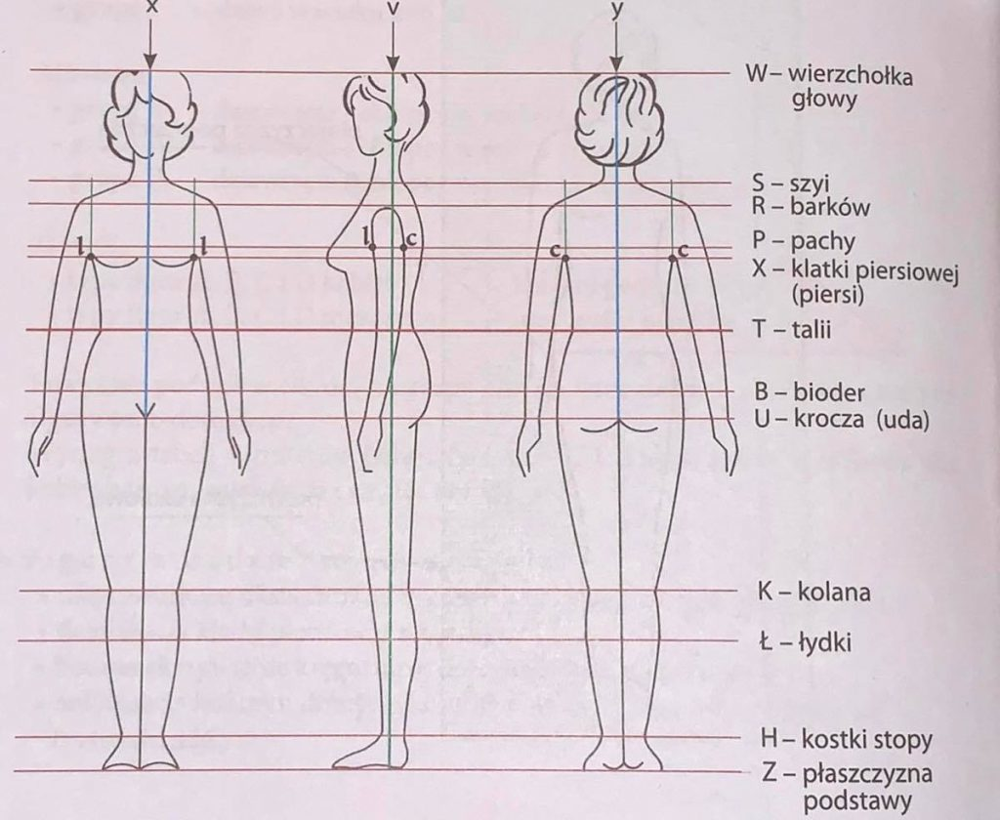
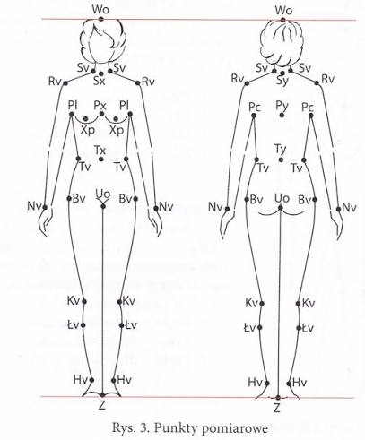

1. ANTROPOMETRIA
Antropometria to zespół technik i metod pomiarowych umożliwiających badanie cech wymiarowych człowieka i ich zmienności w rozwoju ewolucyjnym.
* Antropometria zajmuje się pomiarami części ciała ludzkiego
2. POMIARY ANTROPOMETRYCZNE
Pomiary antropometryczne dokonywane są za pomocą specjalnych przyrządów z dużą dokładnością.
Obejmują wiele różnych szczegółowych pomiarów i są wykonywane na dużej liczbie osób.
Z pomiarów antropometrycznych korzystają konstruktorzy odzieży, obuwnicy, modyści.
Wykorzystywane są również w przemyśle meblarskim, budownictwie, komunikacji - wszędzie tam, gdzie wymiary człowieka mają wpływ na wielkość lub rozmiar produktu finalnego.
3. POMIARY KRAWIECKIE
Pomiary krawieckie to pomiary wykonywane w taki sam sposób jak pomiary antropometryczne, ale z mniejszą dokładnością.
Obejmują tylko te pomiary, które są potrzebne do konstruowania form odzieży dla określonej osoby.
OZNACZANIE POMIARÓW
W celu ujednolicenia pomiarów na ciele ludzkim wyznaczono:
Główne płaszczyzny ciała
Figura kobieca podzielona została trzema płaszczyznami:
xy - strzałkowa środkowa - dzieli ciało symetrycznie na część lewą i prawą;
vv - czołowa środkowa - dzieli ciało na część przednią i tylną;
T - poprzeczna środkowa - dzieli ciało na część górną i dolną.

Linie ciała
Przecięcia płaszczyznami głównymi pozostawiają na ciele kobiety ślady w postaci linii, które oznaczamy symbolami:
Linie pionowe:
x - środkowa przednia
y - środkowa tylna
v - boczna
Linia pozioma:
T - talii
Płaszczyzny równoległe do płaszczyzn głównych noszą nazwę płaszczyzn pochodnych.
Pochodnymi płaszczyzny czołowej - vv - są dwie płaszczyzny, które wyznaczają linie pionowe:
c - pachowa tylna
l - pachowa przednia
Pochodnymi płaszczyzny poprzecznej - T - są płaszczyzny wyznaczające linie poziome:

Punkty pomiarowe
Na skrzyżowaniu wyznaczonych linii ciała:
* pionowych x, y, v - z
* poziomymi S, P, X, T, B, U, K, Ł, H,
powstają punkty pomiarowe, które oznacza się symbolami pochodzącymi od nazw tych linii, np.:
- na skrzyżowaniu linii talii - T z linią środka tyłu - y powstaje punkt pomiarowy Ty,
- na skrzyżowaniu linii talii - T z linią środka przodu - x powstanie punkt pomiarowy Tx.
- na układzie kostnym:
Sy - na wyrostku kolczystym siódmego kręgu szyi,
Hv - na kostce stopy,
Nv - na brzegu kości promieniowej od strony bocznej, - na częściach miękkich ciała:
Xp - na brodawce piersiowej gdzie p - oznacza przód, - na osi ciała: Wo - na wierzchołku głowy.
